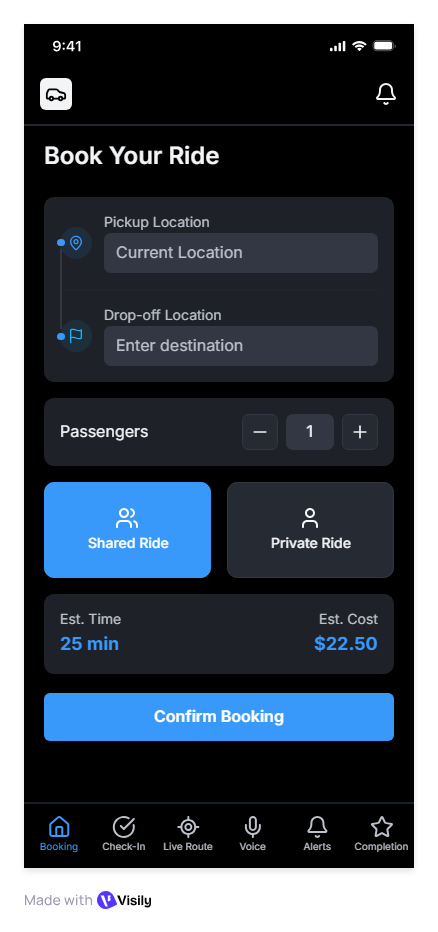
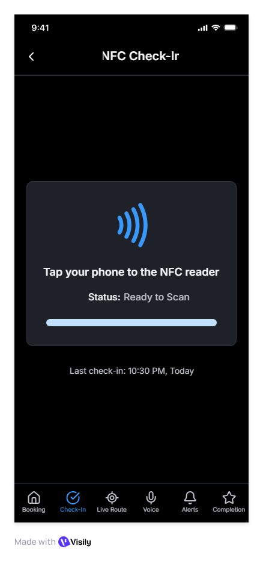
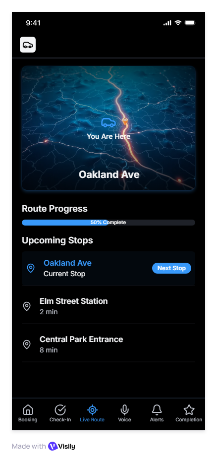
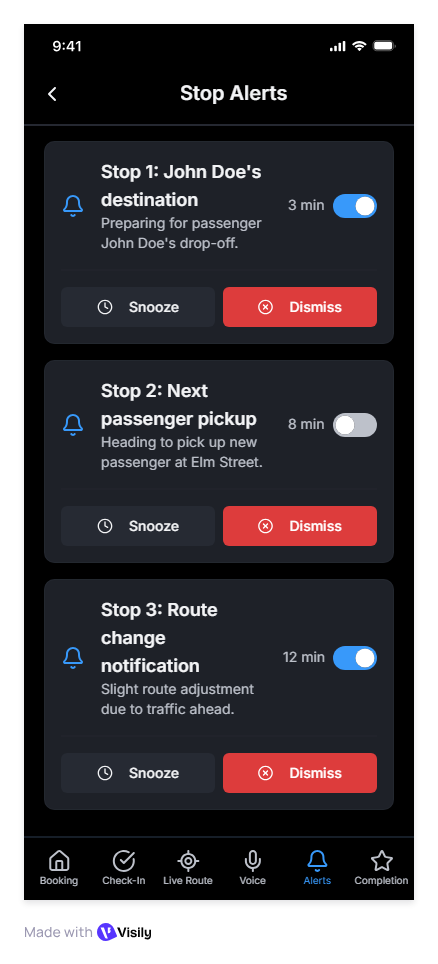
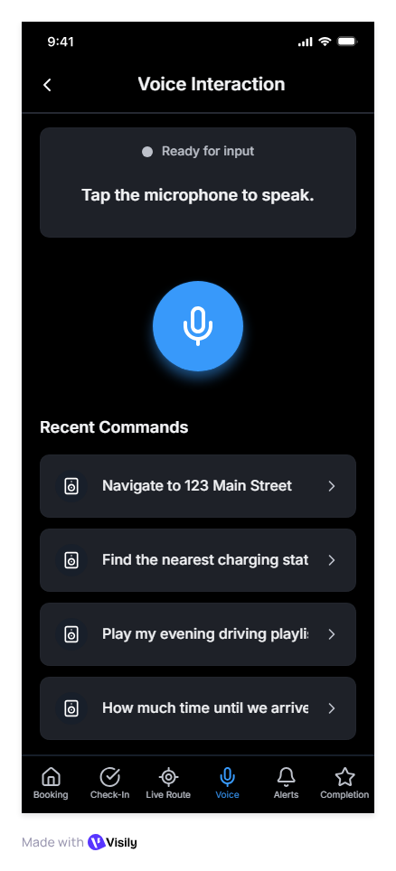
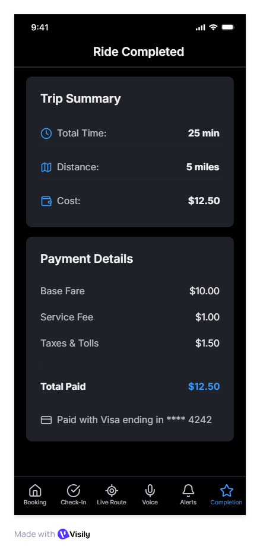
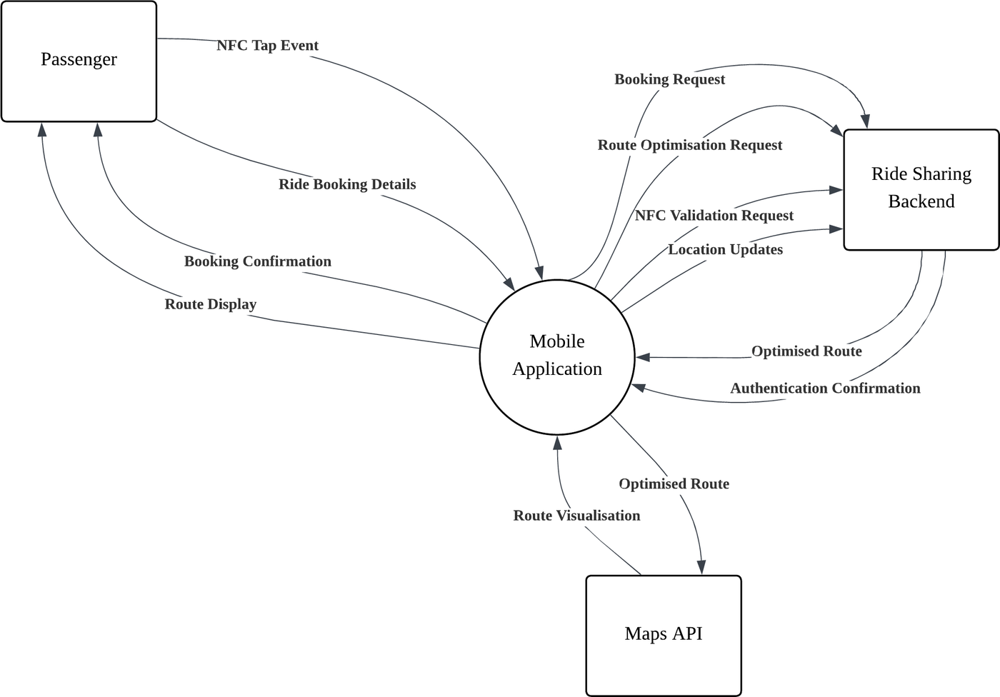
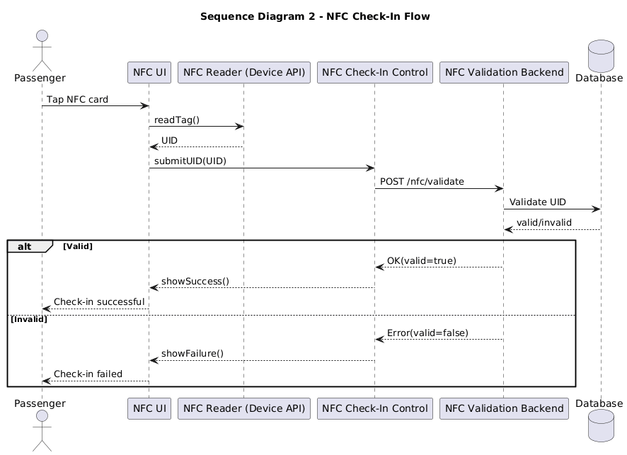

Fatigue-Aware Late-Night Ride-Sharing App
- Team
- 5
- My part
- NFC check-in feature
- Architecture
- Client–server, MVVM on the mobile client, REST APIs
- Mobile features
- GPS, NFC, real-time route optimisation, voice interaction
The problem
Late-night shift workers in healthcare, logistics, food and beverage, and security often travel home between 22:00 and 06:00, tired. Fixed-route buses don't adapt to demand, so waits are long and routes take detours. Ride-hailing is expensive, and it doesn't combine passengers heading in similar directions.
The idea
A shared, demand-responsive vehicle whose route is generated from the passengers actually on board. Each passenger books a ride, checks in with NFC when boarding, follows the live route and ETA, and gets an alert before their stop. Because the users are tired, every screen is designed for low effort: a low-glare night mode that switches on automatically, large controls, and voice commands for hands-free questions such as "how much longer?"
The app






How it fits together

![Layered architecture diagram. The presentation layer holds the booking, NFC check-in, live route, route completion and voice interaction UIs and the ViewModels. The application and domain layer holds booking, NFC check-in, route optimisation and live tracking controls, and the ride, vehicle, passenger, booking, route, location update and payment entities. The data and infrastructure layer holds the backend booking API, NFC service, GPS service, routing engine, authentication API and database. Requests flow down between layers and responses flow up.](img/night-ride/layered-architecture.png)
The mobile app handles the screens and phone sensors; the backend handles bookings, groups passengers and computes the shared route. The route is first computed when a ride is booked, then recalculated after NFC check-in, so no-shows don't leave the vehicle detouring for passengers who never boarded.
My part: NFC check-in
I owned the NFC check-in feature (user story US-2, delivered in Sprint 2). When a passenger boards, they tap their phone on the vehicle's NFC reader. The app reads the card ID and sends it to the backend, which checks it against the booking and either confirms the check-in or rejects it.

The work covered three sprint tasks:
| Task | What it involved |
|---|---|
| SB2-1 | The check-in screen: a clear "ready to scan" state, progress while reading, and success or failure feedback |
| SB2-2 | Reading the NFC card ID and validating it against the passenger's booking |
| SB2-3 | Updating the ride status once a passenger is checked in |
Check-in is more than a convenience. It's the signal the backend uses to recalculate the shared route: once the system knows who has actually boarded, it can drop no-shows from the route instead of detouring to pick up passengers who aren't there.
Designing for tired users shaped the screen: one large target, a single instruction, and an unmistakable success or failure message, so a passenger doesn't need to read anything carefully at 3am.
Requirements as user stories
| ID | User story | Priority |
|---|---|---|
| US-1 | As a passenger, I want to select a pickup and destination so that I can request a ride | High |
| US-2 | As a passenger, I want to check in using NFC so that the system can verify I've boarded | High |
| US-3 | As a passenger, I want to see the live route and ETA so that I can track my ride | High |
| US-4 | As a passenger, I want to use voice commands so that I can check status hands-free | Medium |
| US-5 | As a passenger, I want night mode so that the screen is comfortable in the dark | Medium |
| US-6 | As a passenger, I want alerts before my stop so that I don't miss it | Medium |
| US-7 | As a passenger, I want the system to confirm ride completion so that my session ends correctly | Low |
Plan: three sprints
| Sprint | Focus |
|---|---|
| 1 | App foundation (MVVM), ride booking, booking API, night-mode theming, mock GPS |
| 2 | NFC check-in, passenger grouping, graph-based route optimisation |
| 3 | Live tracking, ETA updates, stop alerts, voice interaction, ride completion, final testing |
Work was tracked in GitHub Projects: each feature was an issue with labels, moved across a To Do → In Progress → Review → Done board.
What I learned
- Designing for a tired user changes every decision: fewer taps, bigger targets, a dark screen, and voice as a fallback.
- Choosing when to recompute a route matters as much as how. Recalculating after check-in handles real-world no-shows without constant updates.
- A small feature can carry a lot of weight. NFC check-in looks like a single tap, but it's what tells the backend who has really boarded, and the route depends on it.